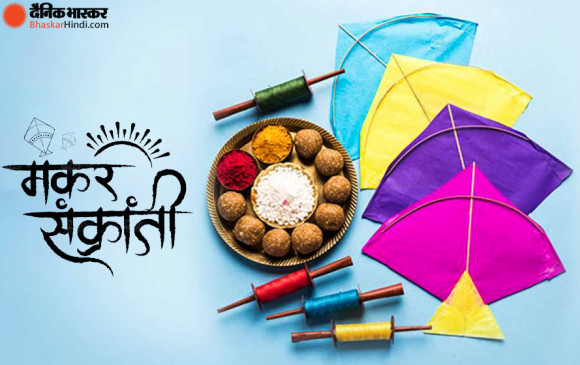

MAKAR SANKRANTI

Bangladesh and West Bengal as Poush Sankranti, and in Nepal as Maghe Sankranti, sam(n)kranti here means ‘transfer’, this day is considered as the transition day of Sun into the Capricorn. Now the sun moves northwards in the Hindu calendar, dedicated to the deity Surya (sun), many native festivals are organised all over India. It is observed each year the day Sun enters the Capricorn zodiac which corresponds with the month of January as per the Gregorian calendar.[1][2][3] It marks the first day of the sun's transit into Makara rashi (Capricorn).[1][4] Due to the addition of one day in leap years, the date of Makar Sankranti may vary a bit. On leap years it falls on 15 January, otherwise on 14 January. There are 365.24 days in one year but we can use only 365 whole days. Then we add one day on the leap year. By the time of leap year, year Calendar is lagging almost one day behind the sun, causing Makar Sankranti to fall on 15 January. When correction is made Makar Sankranti falls back on 14 January. The festivities associated with Makar Sankranti are known by various names Magh Bihu in Assam, Maghi in Punjab, Maghi Saaji in Himachal Pradesh, Maghi Sangrand or Uttarain (Uttarayana) in Jammu, Sakraat in Haryana, Sukarat in central India, Pongal in Tamil Nadu, Uttarayan in Gujarat, and Uttar Pradesh, Ghughuti in Uttarakhand, Dahi Chura in Bihar, Makara Sankranti in Odisha,